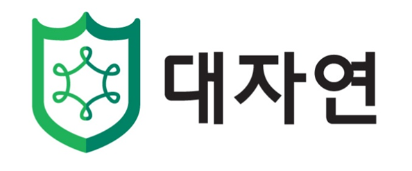
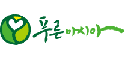
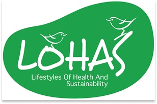
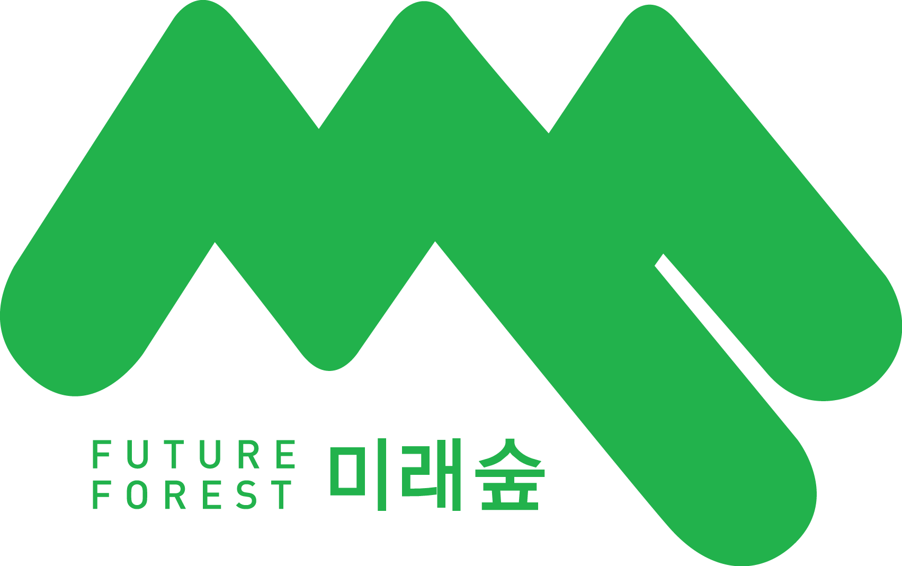

Introduction
숙명환경리더십그룹
SEM(Sookmyung Environmental Movement)은 지구의
목소리를 대신해
미래의 변화를 만들어나가는 숙명여대 학생지원팀 소속 환경
리더십그룹입니다.
SEM은 기존에 환경 리더십그룹으로 활동했던 숙명환경봉사단과 GPS의
통합으로 2022년 3월,
숙명을 대표하는 유일한 환경 리더십그룹으로서 새로이
출범하게 되었습니다.
오늘날, 그 어느 때보다 심각한 기후 위기로 모두의 관심과 실천이
요구되는 이 시점에
SEM은 대학생 환경단체로서
녹색 평화를 주도합니다.
우리는
건강한 캠퍼스, 살아있는 자연, 아름다운 지구를
지키기 위해
숙명인과 세계 시민의 지속 가능한 내일을 위해노력할 것임을
다짐합니다.
또한, SEM은 외부 단체와 협력하여 다양한
교내외 환경 프로젝트를 진행하고 환경 인식 제고를 위한 캠페인을
기획하며, 자체적인 학술 탐구의 기회를 마련하는 등 미래 세대의
환경 인재 양성에 기여합니다.
|
환경을 지키고자 하는 SEM의 의지를 담았습니다.
|
|
 |
 |  | ||
 |